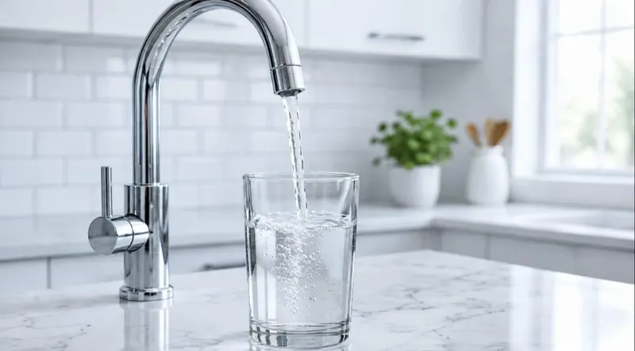

Entiende el agua que sale de tu grifo
Dureza, cal, sabor y calidad del agua en España, explicados de forma clara por un estudiante de Ingeniería Química con experiencia en tratamiento de aguas. Sin vender filtros.

¿Tu agua es blanda o dura?
La dureza se mide en grados franceses (ºf). Así se clasifica el agua en España:
La dureza en las grandes ciudades
Consulta la dureza de tu ciudad →
¿No sabes la de tu casa? Te explicamos 5 formas de averiguarla →
Empieza por aquí
Calculadora de dureza y descalcificador
Convierte ºf, ºdH y mg/L y calcula el descalcificador que necesitas.
BásicoQué es la dureza del agua y por qué deja cal
De dónde salen el calcio y el magnesio y por qué cada zona es distinta.
Salud¿Es malo beber agua dura?
Lo que dicen la normativa, la OMS y la OCU, incluido el mito de los riñones.
Guías prácticas
Cómo saber la dureza del agua de tu casa
Análisis oficial, tiras, gotas… y por qué el TDS no vale.
Equipos¿Merece la pena un descalcificador?
A partir de qué dureza compensa y qué tamaño elegir.
EquiposÓsmosis inversa en casa
Qué quita, cuánta agua tira y cuándo merece la pena.
HogarCómo quitar la cal de grifos y mamparas
Vinagre, ácido cítrico y los errores que debes evitar.
Comparativa¿Agua del grifo o embotellada?
Hasta miles de veces más barata la del grifo.
SaludNitratos en el agua del grifo
Cuándo preocuparse y quién debe tener cuidado.
Quién está detrás
Me llamo Ismael y soy estudiante de último curso de Ingeniería Química en la Universitat Politècnica de València, con prácticas en una estación depuradora de aguas residuales. Creé esta web para explicar con rigor y sin tecnicismos lo que hay detrás del agua que bebemos. Conoce más sobre el proyecto.